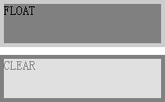
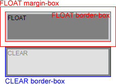

RM8006: IE6 IE7 IE8(Q)中设置了 'clear' 特性的元素 'margin-top' 特性处理有误，某些情况下会与浮动元素重叠
标准参考
根据 W3C CSS2.1 规范中的描述，'clear' 特性表明了一个元素的框的哪一边（left | right）不可以和一个先前的浮动框相邻。'clear' 特性并不考虑该元素内部或其他 block formatting context 中的浮动。'clear' 特性所带来的清理（Clearance）被当做一个元素 'margin-top' 之上的空白区域，它在垂直方向推动元素（通常是向下），越过浮动。
当它作用于非浮动块级框上时，其取值如下：
- left：清理生成的框使元素的 'border' 上边界（即 'border-top'）置于其之前的左浮动元素 'margin '下边界（即 'margin-bottom'）下面；
- right：清理生成的框使元素的 'border' 上边界（即 'border-top'）置于其之前的右浮动元素 'margin '下边界（即 'margin-bottom'）下面；
- both：清理生成的框使元素的 'border' 上边界（即 'border-top'）置于其之前的任意向右及向左浮动元素 'margin '下边界（即 'margin-bottom'）下面；
- none：关于浮动对框的位置没有约束。
可以看到 W3C 对 'clear' 特性的元素的要求是：
拥有 'clear' 特性的元素顶部 'border-box' 在垂直方向不可位于之前浮动元素的底部 'margin-box' 之上。
关于 'clear' 特性的更多信息，请参考 CSS2.1 规范 9.5.2 Controlling flow next to floats: the 'clear' property。
问题描述
在 IE6 IE7 IE8(Q) 下，为 'clear' 元素设置负的 'margin-top' 时， 'clear' 元素的顶部 'border-box' 出现在了其之前浮动元素的底部 'margin-box' 之上。
造成的影响
在 IE6 IE7 IE8(Q) 下，为 'clear' 元素设置负的 'margin-top' 时，会造成页面内容重叠。
受影响的浏览器
| IE6 IE7 IE8(Q) |
|---|
问题分析
在 IE6 IE7 IE8(Q) 中，为设置了 'clear' 特性的元素设置负的 'margin-top' 时，'clear' 元素的顶部 border-box 会出现在了其之前浮动元素的底部 margin-box 之上、与其重叠。
分析以下代码：
<div style="float:left; width:200px; height:50px; background:gray; border:5px solid #CCC;; margin:10px;">FLOAT</div>
<div style="clear:left; margin:-30px 10px 10px; border:5px solid black; width:200px; height:50px; background:silver; filter:alpha(opacity=50); opacity:0.5;">CLEAR</div>
测试代码中一个左浮动的 DIV 元素后跟随着一个 ’clear:left‘ 的 DIV 元素，同时 'clear' 特性元素有 -30px 的上边距。
在各浏览器中效果如下：
| IE6 IE7 IE8(Q) | IE8(S) Firefox Chrome Safari Opera |
|---|---|
 |
 |
| 添加 margin-box、border-box 说明后： | |
 |
 |
可见，在 IE6 IE7 IE8(Q) 中， 'clear' 元素违反了CSS规范中对 'clear' 特性的规定，在为 'clear' 元素设置负的 'margin-top' 时， 'clear' 元素的顶部 'border-box' 出现在了其之前浮动元素的底部 'margin-box' 之上。
而在 其他浏览器 中，如上例浮动元素的 margin-box 的高度为60px，所以当我们为 'clear' 元素设置小于60px（包括负值）的 'margin-top' 时，都不会使其垂直方向发生偏移，这是完全遵照 CSS 规范处理。
不仅仅是负值的 'margin'，事实上 IE6、IE7、IE8(Q) 对于 'clear' 元素上其他一些取值范围内的 'margin-top' 处理也有 Bug。
再看如下代码：
<html>
<head>
</head>
<body>
<div id="container" style="border:5px solid black;">
<div id="float1" style="background:#777; width:100px; height:30px; float:left;">H:30px</div>
<div id="float2" style="background:#999; width:100px; height:40px; float:left; border:5px solid #333; margin-bottom:10px;">H:40px</div>
<div id="clear" style="background:#AAA; clear:left; border:5px solid #666;" id="d">CLEAR margin-top:<span id="s">80px</span></div>
</div>
<script>
var d = document.getElementById("d");
var s = document.getElementById("s");
var m = 80;
setInterval(function () {
s.innerHTML = m + "px";
d.style.marginTop = m-- + "px";
(m == -40) && (m = 80);
}, 80);
</script>
</body>
</html>
上面代码中，容器【container】中包含两个左浮动元素【float1】及【float】，以及一个 'clear' 元素 【clear】，【clear】 上设置了 'margin-top:80px'。页面加载后，通过定时器每隔 80 毫秒使 【clear】 的 'margin-top' 的值减一，直到其值由最初的 80 减至 -39。
这段代码在不同浏览器中运行结果如下（忽略 IE 混杂模式的 width/height 作用位置差异）：
| IE6 IE7 IE8(Q) | IE8(S) Firefox Chrome Safari Opera |
|---|---|
可见，对于测试样例，margin-top:60px 是一个分水岭，【container】内高度最大的浮动元素为【float2】，其高度为 40px，上下各有 5px 的边框，下部有 10px 的边距，则【container】中所有浮动元素生成框的底部外界距离它们的包含块（即【container】）为 60px。
当清除元素的 'margin-top' 大于等于 60px 时，各浏览器表现一致，即清除元素的 'margin-top' 是相对于其包含块；而当清除元素的 'margin-top' 小于 60px 时：
- 在 IE6 IE7 IE8(Q) 中，【clear】的 'margin-top' 变为相对于【container】中所有浮动元素生成框的底部外界；
- 在 其他浏览器 中，则按照规范所描述的，拥有 'clear' 特性的元素顶部 border-box 在垂直方向不可位于之前浮动元素的底部 margin-box 之上。
解决方案
尽量避免为 'clear' 特性不为 none 的元素（即清理元素）设置 'margin-top' 特性，尤其是负值。若需要为该元素设置正的 'margin-top' 特性，可以将 'clear' 元素当做容器，在其内部加入设置了 'margin-top' 的元素。若需要为该元素设置负的 'margin-top' ，可以为浮动元素设置负的 'margin-bottom' 以缩小其 'margin-box' ，提高了其底部 'margin-box' 的位置，从而使 'clear' 元素可以产生向上移动的效果。
参见
知识库
相关问题
测试环境
| 操作系统版本: | Windows 7 Ultimate build 7600 |
|---|---|
| 浏览器版本: |
IE6 IE7 IE8 Firefox 3.6 Chrome 4.0.302.3 dev Safari 4.0.4 Opera 10.60 |
| 测试页面: | RM8006.html clear_ani.html |
| 本文更新时间: | 2010-07-20 |
关键字
clear float margin 浮动 清理